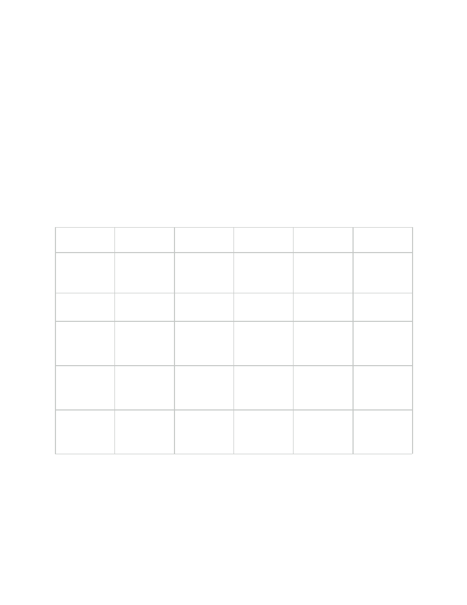
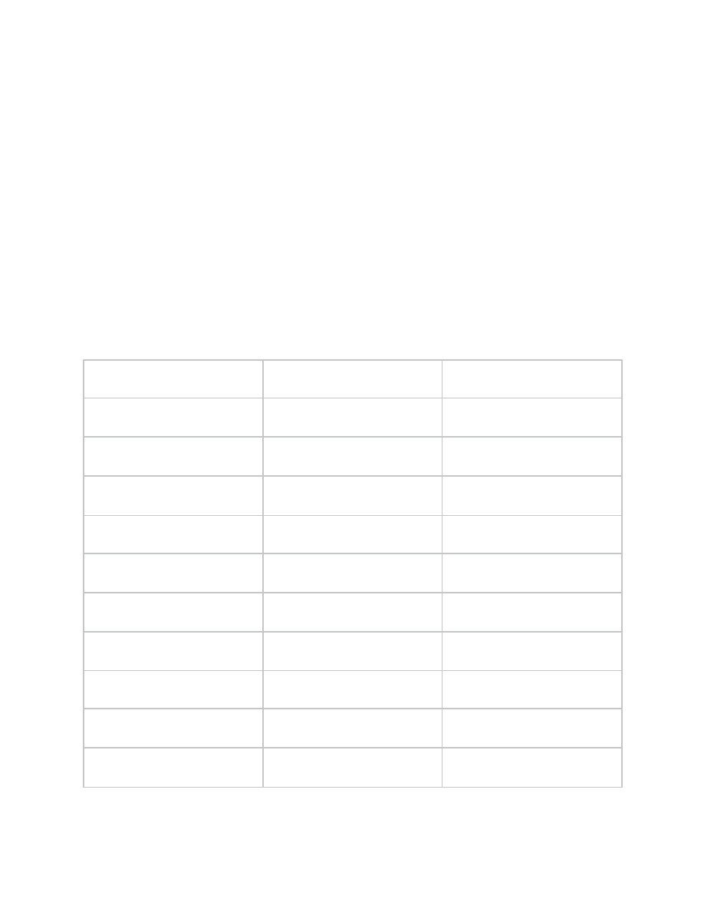
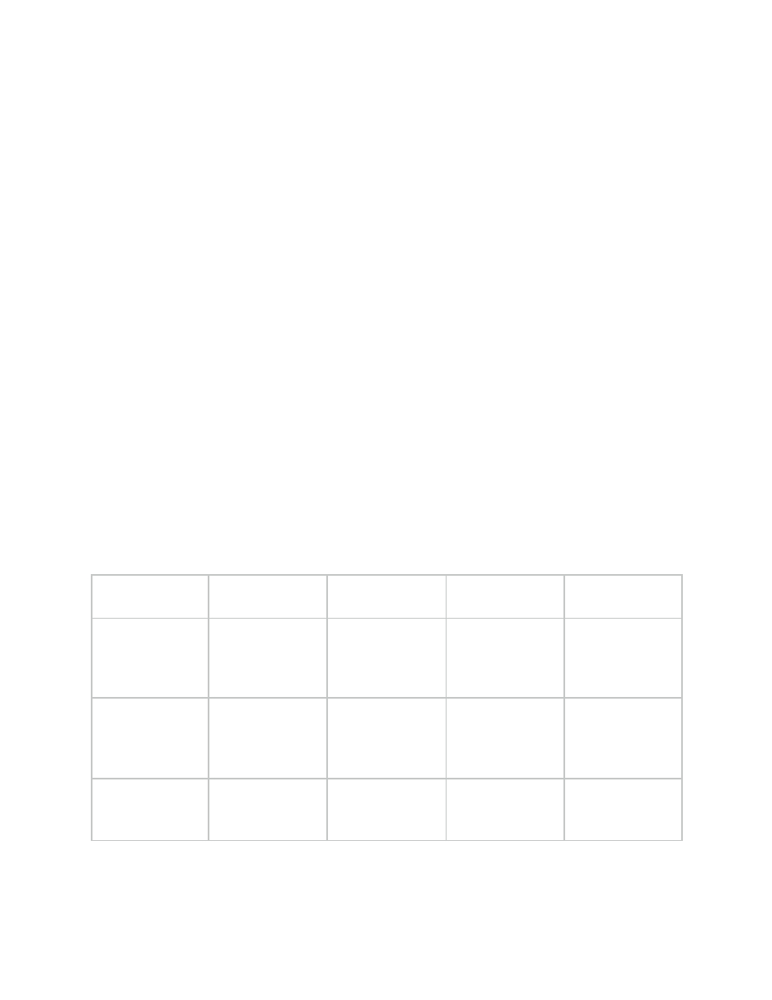
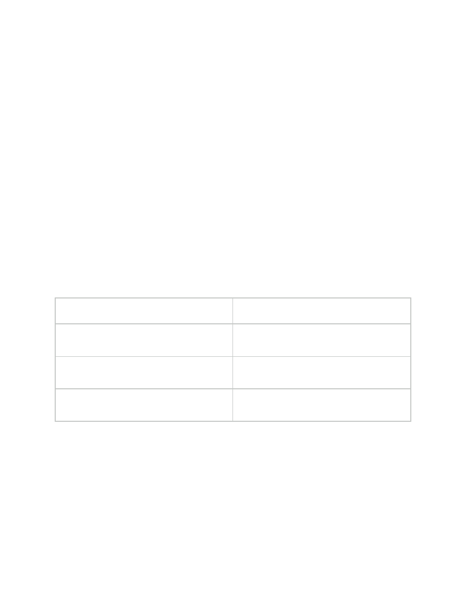
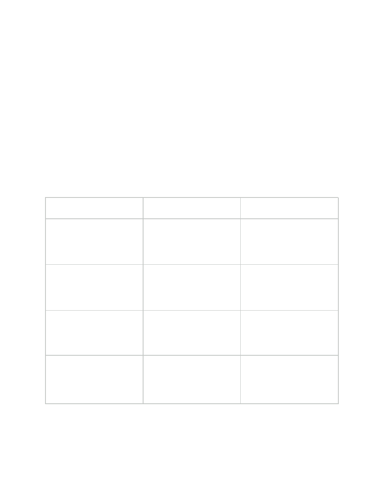
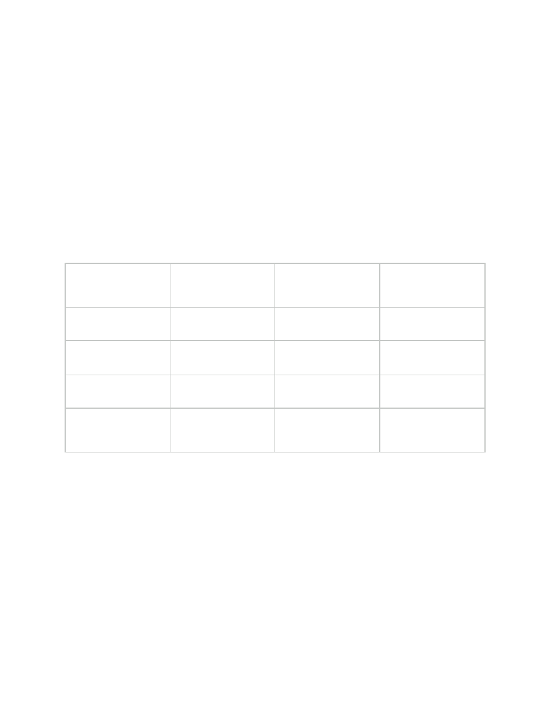
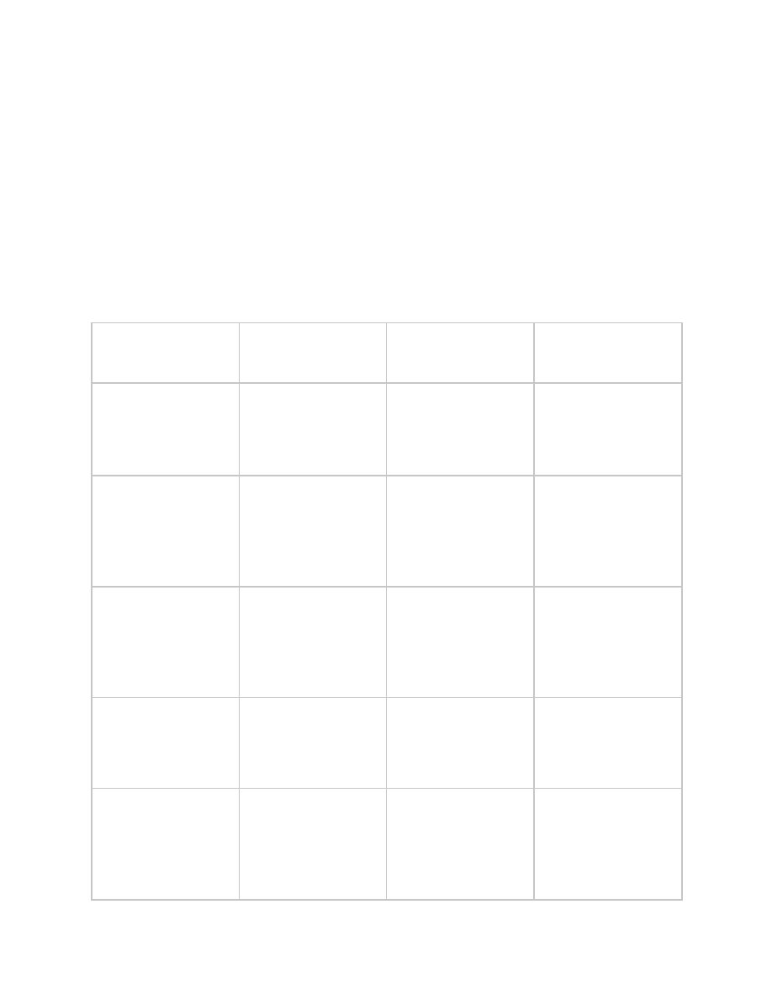

Educator's Field Manual: The Inka Khipu
Arcade & Somatic Compute System
A Complete Pedagogical Guide for Hands-On Andean Arithmetic
Basin Game Studios / Mage's Guild Psychonautics (c) 2026 - MIT LICENSE -
enhance-redistribute - This Knowledge is Yours to Improve
1. Executive Summary & Pedagogical Foundations
Objective
To teach students positional decimal arithmetic, spatial matrix decomposition, and non-lossy
digital logic without relying on abstract memorization, external data stacks, or electronic
computation.
Core Philosophy: Somatic Computing & Discrete Phase Space
The Yupana (Andean counting board) and Khipu (knotted cord archive) form a unified, tactile
information-processing architecture:
●
The Yupana is the ALU / RAM: A dynamic, physical board where calculations occur in
real time by moving physical counters (beans, corn kernels, or pebbles) directly within
cup receptacles.
●
The Khipu is Non-Volatile Software Storage: A permanent, physical record where final
Yupana states are committed into cord networks using positional knot metrics.
●
Clock-Step Execution (Phase Space): Instead of executing rigid mental math for every
individual bean, the operator uses their hands to instantiate physical states by placing
multiple beans in cups. At a chosen "clock step" (a deliberate manual pass across the
board), the operator applies simple local rules (fusions, avalanches, unweaving) to let the
system "settle" into its path of least resistance—its natural gravitational attractor.
Key Learning Outcomes
By completing this module, students will:
1.
Express any decimal number 0…9,999 on a physical 4-cup geometric grid using no more
than 3 physical counters per row.
2.
Perform addition and subtraction using fluid "fusions," "avalanches," and "unweaving"
instead of memorized carry/borrow algorithms.
3.
Execute multi-digit multiplication and division entirely on-board through spatial loom
shifts and fair-share allocation (Ayni).
4.
Understand how tactile, non-silicon systems process complex computational workloads
deterministically.

2. Materials & Physical Set-Up
Classroom Materials Required (Per Student or Pair)
1.
1 × Yupana Board: A grid of 5 rows by 4 geometric columns.
○
Classroom Alternatives: Readily available egg cartons (a 5×4 grid of egg cups) or
drawn grids on paper/whiteboards.
2.
30–40 Physical Counters: Quinoa beans, dry corn kernels, small river stones, or plastic
tokens. (No cards, paper stacks, or external state trackers required.)
The Board Topology
TIER / ROW
[5]
[3]
[2]
[1]
TIER VALUE
10
4
(10,000)
( )
( )
( )
( )
= 0
(1,000)
10
3
( )
( )
( )
( )
= 0
(100)
10
2
(●)
( )
(●)
( )
= 700 [(5 +
2) × 100]
(10)
10
1
( )
(●)
( )
(●)
= 40 [(3 + 1)
× 10]
(1)
10
0
(●)
(●)
( )
(●)
= 9 [(5 + 3 +
1) × 1]
●
Vertical Axis (Powers of 10): Bottom row is Units (
), moving up to Tens (
),
10
0
10
1
Hundreds (
), Thousands (
), and Ten-Thousands (
).
10
2
10
3
10
4
●
Horizontal Axis (The 4 Magic Cups): Each row contains four physical receptacles
valued at [5], [3], [2], and [1].

3. Unit 1: Digit Representation & The Golden Rule
Lesson Concept
Any decimal digit ($0 \dots 9$) is formed in a single row by summing the values of the cups
containing beans.
The Golden Rule: Always place counters in the largest available cup that fits the remaining
value.
This rule guarantees that no single digit ever requires more than 3 beans when the board is
in a rested state.
Teacher's Digit Encoding Reference Chart
Digit
Cup Combination
Total Beans Used
0
Empty Row
0
1
[1]
1
2
[2]
1
3
[3]
1
4
[3] + [1]
2
5
[5]
1
6
[5] + [1]
2
7
[5] + [2]
2
8
[5] + [3]
2
9
[5] + [3] + [1]
3

4. Unit 2: Somatic Addition & The Clock-Step
Avalanche
Mechanical Principles: Phase Space & Clock Steps
In somatic compute, addition is performed by directly placing the new addend's beans into the
board alongside the existing value. You do not need to calculate carries immediately while
placing beans. The human operator populates the cups (instantiating the un-settled phase
space) and then "steps the clock" forward by sweeping hands across the board to apply local
settlement rules:
1.
In-Row Fusion (Gravitational Attraction):
○
Two [1] beans in cup [1]: On clock step, merge into one bean in cup [2].
○
One [1] and one [2] bean: On clock step, merge into one bean in cup [3].
○
One [2] and one [3] bean: On clock step, fall into the path of least resistance
→
merge into one bean in cup [5]. Note, there is a “gravity” to the golden rule’s
movement, which will become intuitive with practice. We could represent a 5 by
populating 3 and 2, but the clock step essentially “applies gravity and fusion” at
time of calculation.
2.
The Great Bean Avalanche (Carry-Up Rule):
○
When cup [5] accumulates two beans (
), both beans fuse and jump UP
5 + 5 = 10
to the tier above as a single [1] bean (
). Cup [5] of the current tier is cleared
+ 10
to .
0
TIER
[5]
[3]
[2]
[1]
Tier Above
(10s)
( )
( )
( )
(●) (Carried +1
bean into Cup
[1])
Avalanche
Trigger
\
\
\
▲ (5 + 5 = 10
Avalanche
Trigger)
Units Tier (1s)
(●) + (●)
( )
( )
Cup [5]
empties to 0
Direct On-Board Addition Procedure (A + B)

1.
Set the initial number A on the Yupana according to the Golden Rule.
2.
Take the beans for number B in your hand.
3.
Drop B's beans directly into the corresponding tier cups where A is sitting (e.g., if B has a
5 in the units place, drop a bean into the units row's [5] cup).
4.
Clock Step: Sweep your hands from bottom tier (
) upwards, resolving fusions and
10
0
avalanches until every row obeys the Golden Rule.
5. Unit 3: Somatic Subtraction & Unweaving
(Borrowing)
Mechanical Principle
Subtraction is the physical removal of beans directly from the board. If a cup does not contain
enough beans to remove the subtrahend value, the operator unweaves a bean from a higher
tier to supply the necessary energy.
Unweaving Rule (Borrowing): Remove 1 bean from cup [1] of the tier above (
), and
10
𝑛+1
replace it with TWO beans in cup [5] of the current tier (
). (
).
10
𝑛
10 = 5 + 5
TIER
ACTION / BEAN STATE
Tier Above (10s)
(●) Remove 1 bean (-10)
→
Unweaving Flow
│
▼ (Unweaves into 5 + 5)
→
Units Tier (1s)
(●) (●) in Cup [5] Subtract freely!
→
Direct Subtraction Procedure (A - B)
1.
Set minuend A on the Yupana.
2.
Identify the value of subtrahend B by digit.
3.
Remove beans corresponding to B starting from the highest tier down. If a cup lacks a
required bean, unweave one bean from the tier above into two [5] beans in the current
tier, then remove the target amount.

6. Unit 4: Tactile Multiplication (The Multiplier Loom)
Mechanical Principle
Multiplication on the Yupana uses spatial translation across rows—treating the vertical board
tiers as "loom rails." You do not need to memorize times tables.
Spatial Shift Rules
Decompose the multiplier into its individual component cups (
across their
[5], [3], [2], [1]
respective rows). For each component:
●
Multiplying by [1]: Replicate the multiplicand's pattern in the same row tier.
●
Multiplying by [2]: Double the multiplicand's pattern into the same row tier.
●
Multiplying by [3]: Triple the multiplicand's pattern into the same row tier.
●
Multiplying by [5]: Shift the multiplicand's pattern UP one row tier (equivalent to
)
× 10
and take half, OR place into the [5] cups of the shifted tier.
●
Multiplying by Tens / Hundreds (10, 30, etc.): Shift the entire pattern UP by 1 or 2 row
tiers.
After placing all partial product beans directly onto the board, execute a single Clock Step to
resolve all fusions and avalanches until the board settles.

7. Unit 5: Somatic Division & Fair-Share Allocation
(Ayni)
Pedagogical Foundations of Ayni
In Andean culture, Ayni represents reciprocal community exchange and fair-share distribution.
Somatic division models this directly: a total communal harvest (dividend) is systematically
partitioned into equal family allotments (divisor).
Division on the Yupana is the exact inverse of the Multiplier Loom. Instead of shifting a
multiplicand UP the board to build a product, division tests how many full divisor units can be
"harvested" (subtracted) from the dividend, tier by tier, working from the top down.
The 4-Step Somatic Division Protocol
STEP
ACTION
DESCRIPTION
1
Board Setup
Place the total dividend on
the main Yupana grid. Keep
the divisor to the side as a
reference template.
2
Test Capacity
Test if a full unit of the
divisor (scaled to the
highest occupied tier) fits
into the dividend.
3
Harvest & Allot
Subtract the divisor's
pattern from the board and
record 1 count in the
Quotient row for that tier.
4
Step-Down
Unweave remaining beans
down (
in
10
𝑛
→ 5 + 5
10
𝑛−1
) and repeat until Units are
complete.

Detailed Division Walkthrough 1: 4,800 / 32 = 150
●
Initial Board State: 4,800 on board (Thousands: [3]+[1], Hundreds: [5]+[3]). Divisor
reference = 32 (3 Tens, 2 Units).
Step 1: Test Hundreds Tier (Scaling Divisor by 100 3,200)
→
●
Can we remove 3,200 (3 Thousands, 2 Hundreds) from 4,800? YES!
●
Action: Remove 3 beans from Thousands row, 2 beans from Hundreds row.
●
Board Remaining: 1,600 (Thousands: [1], Hundreds: [5]+[1]).
●
Quotient Recorded: 1 Hundred (100).
Step 2: Test Hundreds Tier Again
●
Can we remove another 3,200 from 1,600? NO.
●
Unweave Thousands: Take 1 bean from Thousands [1] and unweave it into TWO [5]
beans in Hundreds row.
●
Board Hundreds Row now holds: [5], [5], [5], [1] (= 1,600).
Step 3: Test Tens Tier (Scaling Divisor by 10 320)
→
●
How many 320s (3 Hundreds, 2 Tens) fit into 1,600?
○
1st allotment (-320): Board = 1,280. Quotient += 10.
○
2nd allotment (-320): Board = 960. Quotient += 10.
○
3rd allotment (-320): Board = 640. Quotient += 10.
○
4th allotment (-320): Board = 320. Quotient += 10.
○
5th allotment (-320): Board = 0. Quotient += 10.
●
Total Tens Allotment: 50.
FINAL RESULT:
(Exact Distribution, 0 Remainder)
100 + 50 = 150
Detailed Division Walkthrough 2: 1,472 / 23 = 64
●
Initial Board State: 1,472 on board (Thousands: [1], Hundreds: [3]+[1], Tens: [5]+[2], Units:
[2]). Divisor reference = 23 (2 Tens, 3 Units).
Step 1: Test Hundreds Tier (Scaling Divisor by 100 2,300)
→
●
Can we remove 2,300 from 1,472? NO.
●
Unweave Thousands: Take 1 bean from Thousands [1] and unweave into TWO [5] beans
in Hundreds row.
●
Hundreds row now holds: 1,400 (two [5]s, one [3], one [1]).
Step 2: Test Tens Tier (Scaling Divisor by 10 230)
→
●
How many 230s (2 Hundreds, 3 Tens) fit into 1,472?
○
Test 60 allotments (
):
6 × 230 = 1, 380
○
Subtract 1,380 (13 Hundreds, 8 Tens) from board.
○
Board Remaining: 92 (Tens: [5]+[3]+[1], Units: [2]).

○
Quotient Recorded: 60.
Step 3: Test Units Tier (Divisor 23)
→
●
How many 23s (2 Tens, 3 Units) fit into 92?
○
Unweave Tens if needed to expose unit beans.
○
4 allotments (
).
4 × 23 = 92
○
Subtract 92 from board. Board Remaining: 0.
○
Quotient Recorded: 4.
FINAL RESULT:
(Exact Distribution)
60 + 4 = 64
8. Unit 6: The Khipu Archive (Database Commits)
Once a calculation settles on the Yupana, the state is committed into a Khipu pendant cord:
PRIMARY CORD
(MAIN RAIL)
Pendant 1
Pendant 2
Pendant 3
Thousands (
)
10
3
( S )
( )
( L3 ) 3,000
Hundreds (
)
10
2
( L7 )
( S ) Tens
( )
Units (
)
10
0
( E )
( L4 )
( E )
COMMITTED
VALUE
1,701
14
3,001
Knot Metric Encoding
1.
Single Knots (S): Used in Thousands (
) tier and higher.
10
3
2.
Long Knots (L): Used in Tens (
) and Hundreds (
) tiers. The number of finger-turns
10
1
10
2
in the knot equals the digit (e.g.,
).
𝐿7 = 7
3.
Figure-Eight Knots (E): Used exclusively in the Units (
) tier to represent a .
10
0
1
4.
Empty Cord Space: Represents a placeholder for that positional tier.
0
Note: The tying of the knot types is not something we have enough skill to teach effectively,
but we are decoding with these baselines. Supplying thread to the students may allow them to
discover this system on their own, as it is a discoverable method of storing software. There are
colors involved in some of the later khipu encoding schemes, as well, and this system does not

exhaust the complete compute ecosystem of the Andean khipu tradition. There is evidence of
more advanced Yupana board configurations, perhaps used to track advanced or remote state.
There are also items that appear to be something akin to smart contracts. We will continue
publishing and distributing materials as we learn more.
9. Educator's Assessment & Verification Rubric
Skill / Objective
Novice (1-2 pts)
Proficient (3-4
pts)
Master (5 pts)
Digit Encoding
Uses
beans per
> 3
row or violates the
Golden Rule.
Encodes digits
$0\dots9$ correctly
using the Golden
Rule.
Instantly sets any
4-digit number with
minimal bean
counts.
Addition & Clock
Step
Forgets to fuse
beans or misses
carry-ups across
rows during the
clock step.
Executes In-Row
Fusions and Bean
Avalanches
accurately on
board.
Demonstrates fluid
multi-row
avalanches without
prompting.
Subtraction &
Unweaving
Attempts to
subtract from
empty cups without
unweaving higher
tiers.
Unweaves
higher-tier beans (
)
10 → 5 + 5
correctly.
Performs multi-tier
unweaving
smoothly during
complex problems.
Ayni Division
Struggles to scale
divisor tiers or track
subtractive
allotments.
Executes top-down
harvesting and
unweaving to find
exact quotients.
Demonstrates fluid
division and
explains Ayni
resource allocation.
Database Commit
Confuses knot
types or positional
tiers on the
pendant cord.
Accurately
translates Yupana
values onto Khipu
cord metrics (𝑠, 𝐿, 𝐸
).
Explains how
Yupana state
transfers non-lossy
into Khipu storage.
10. Updated Sample Student Worksheets
Worksheet 1: Digit Encoding Practice
Mark or place the beans in the cups for each number according to the Golden Rule:
1.
Number: 382
○
Hundreds (
): [5] ( ) [3] (●) [2] ( ) [1] ( )
10
2
○
Tens (
): [5] (●) [3] (●) [2] ( ) [1] ( )
10
1
○
Units (
): [5] ( ) [3] ( ) [2] (●) [1] ( )
10
0
2.
Number: 1,509
○
Thousands (
): [5] ( ) [3] ( ) [2] ( ) [1] (●)
10
3
○
Hundreds (
): [5] (●) [3] ( ) [2] ( ) [1] ( )
10
2
○
Tens (
): [5] ( ) [3] ( ) [2] ( ) [1] ( ) (Empty)
10
1
○
Units (
): [5] (●) [3] (●) [2] ( ) [1] (●)
10
0

Worksheet 2: Somatic Problem Set (On-Board Operations)
Solve using your physical Yupana board (no external stacks!). Record your intermediate steps
and final board state:
Problem 1: Addition
_____
247 + 385 =
●
Step A: Set 247 on board.
●
Step B: Drop 385 directly into corresponding tier cups.
●
Step C (Clock Step): Resolve fusions and avalanches.
●
Target Answer: 632 (Hundreds: [5]+[1], Tens: [3], Units: [2])
Problem 2: Subtraction
_____
1, 204 − 531 =
●
Step A: Set 1,204 on board.
●
Step B: Unweave Thousands tier (
in Hundreds).
1, 000 → 500 + 500
●
Step C: Remove 531 directly.
●
Target Answer: 673 (Hundreds: [5]+[1], Tens: [5]+[2], Units: [3])
Problem 3: Multiplication (Loom Shift)
_____
64 × 23 =
●
Step A: Decompose multiplier
.
23 = 20 + 3
●
Step B: Place
shifted up 1 row (
).
64 × 2
1, 280
●
Step C: Place
in same row (
).
64 × 3
192
●
Step D (Clock Step): Resolve all fusions/avalanches.
●
Target Answer: 1,472 (Thousands: [1], Hundreds: [3]+[1], Tens: [5]+[2], Units: [2])
Problem 4: Ayni Division (Fair-Share Allocation)
_____
3, 600/24 =
●
Step A: Set 3,600 on board. Divisor = 24.
●
Step B (Hundreds Tier): Test 240s (
). Subtract
(
). Remaining =
24 × 10
2, 400 1 × 2400
. Quotient Hundreds = 100.
1, 200
●
Step C (Tens Tier): Unweave
into Tens/Hundreds. Test 24s (
). Subtract
1, 200
24 × 10
(
). Remaining = 0. Quotient Tens = 50.
1, 200 5 × 240
●
Target Answer: 150 (Quotient: Hundreds [1], Tens [5])
Document Outline
- Educator's Field Manual: The Inka Khipu Arcade & Somatic Compute System
- 1. Executive Summary & Pedagogical Foundations
- 2. Materials & Physical Set-Up
- 3. Unit 1: Digit Representation & The Golden Rule
- 4. Unit 2: Somatic Addition & The Clock-Step Avalanche
- 5. Unit 3: Somatic Subtraction & Unweaving (Borrowing)
- 6. Unit 4: Tactile Multiplication (The Multiplier Loom)
- 7. Unit 5: Somatic Division & Fair-Share Allocation (Ayni)
- 8. Unit 6: The Khipu Archive (Database Commits)
- 9. Educator's Assessment & Verification Rubric
- 10. Updated Sample Student Worksheets